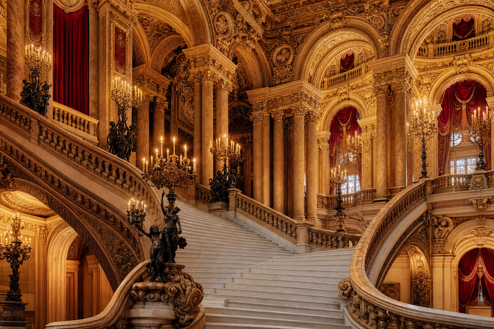
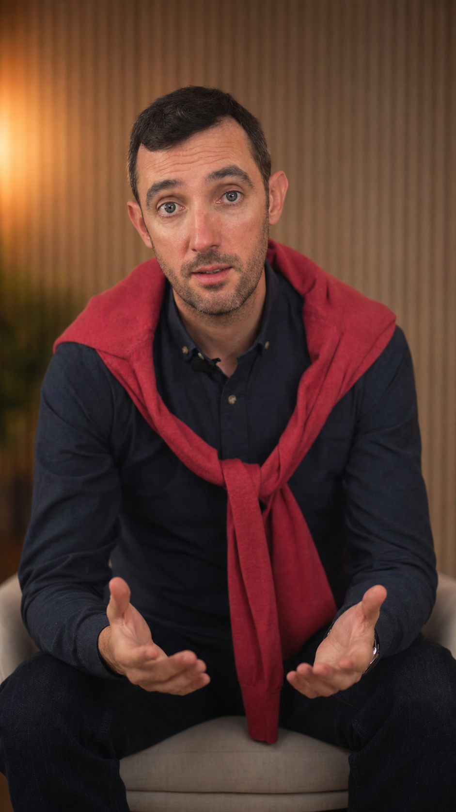

Pedagogy & Philosophy
A culture-first, context-driven approach grounded in research from the Sorbonne — and delivered live, from France.
The Foundation
Our curriculum and pedagogy are grounded in research from the Sorbonne in applied linguistics and second-language acquisition. The methodology developed from Sorbonne research in applied linguistics establishes one irreducible truth: language is not memorised — it is encountered, in real communicative situations, with cultural meaning attached.
At The French Atelier, every unit is built around a living context — a market in Lyon, a gallery opening in Paris, an evening aperitif in Bordeaux. Grammar emerges from conversation. Vocabulary is anchored to culture. The learner arrives not at a rule, but at an experience they cannot forget.
"Language acquisition is not a study of forms — it is a habitation of meaning."
Live from France
Every live class is broadcast from an iconic location in France. The light, the architecture, the ambiance of the street — all part of the lesson. You don't study France. You inhabit it.
The Atelier Principles
Every lesson begins with a cultural act — a piece of music, a film scene, a dish, a work of architecture. Culture is not the supplement to the language lesson; it is the lesson. Grammar and vocabulary arise naturally from the cultural encounter, making each new structure feel inevitable rather than arbitrary.
We teach French the way it is actually spoken — in cafés, at markets, in museums and cinemas, around French tables. No sanitised textbook French. Every phrase, every register, every social grace is practised in the context where it lives. Learners emerge speaking French that surprises native speakers with its naturalness.
Fluency is built through spontaneous conversation, not rehearsed repetition. All French Atelier classes are live — never pre-recorded — broadcast from iconic locations across France by native certified teachers. The learner is inside France's cultural life, not watching it from outside.
Every live class runs with a maximum of 8–10 learners. Research in second-language acquisition is unambiguous: speaking time drives acquisition. Our small groups ensure every learner speaks, responds, and interacts — not once per class, but throughout it. Personal attention is not a luxury here; it is the methodology.
The Six Pillars
The French Atelier curriculum is organised around six cultural domains — each one a living world of French vocabulary, aesthetics, and social life.
CEFR Alignment
Every French Atelier course is aligned with the Common European Framework of Reference for Languages — the international gold standard for language proficiency. Each course completes a defined CEFR level arc, and learners who complete 20 lessons receive a CEFR-aligned certificate from Acadomia.
Each 20-lesson course earns an A1 or A2 certificate from Acadomia — a mark of verified, structured attainment recognised internationally.
| Course | CEFR Arc | Region |
|---|---|---|
| FA Foundation | A0 → A1.1 | Paris |
| FA Beginner | A1.1 → A1.2 | Normandy → Paris |
| FA Elementary | A1.2 → A2.1 | Loire → Atlantic → Basque |
| FA Intermediate | A2.1 → A2.2 | Marseille · Chamonix · Alsace · Reims |
| LSF · Let's Speak French | A0 → A1.2 | Across France (speaking focus) |
The Ecosystem
85-minute live sessions with a native certified teacher, broadcasting from an iconic location in France. Small groups of 8–10 ensure maximum speaking time and personal feedback. Every session is a cultural and linguistic event.
Every class is recorded and available on-demand inside your learning platform. Between live sessions, structured micro-tasks consolidate vocabulary and grammar through real-world exercises — not abstract drills.
Peer-led study groups run twice weekly for learners on the annual plan — a structured space to rehearse, discuss, and deepen the week's cultural themes. Community is not an add-on; it accelerates acquisition.
See It in Action
Discover French with Philippe from West Paris — a genuine French Atelier session, as it happens. Click Sound to hear the class live.
"Discover French with Philippe" — a live French Atelier class, broadcast from West Paris.

Juliane · AI TutorAlways-On Coaching
The method continues beyond the live class. Juliane — our advanced AI French coach — is available 24/7 inside the platform for pronunciation practice, conversation drills, instant corrections, and cultural Q&A. No momentum is ever lost.
Juliane is not a chatbot. She is a sophisticated language coach — patient, precise, and always in French.
Meet JulianeBegin
Join a live class broadcasting from France and experience the French Atelier method for yourself — culture, conversation, and community in one elegant program.